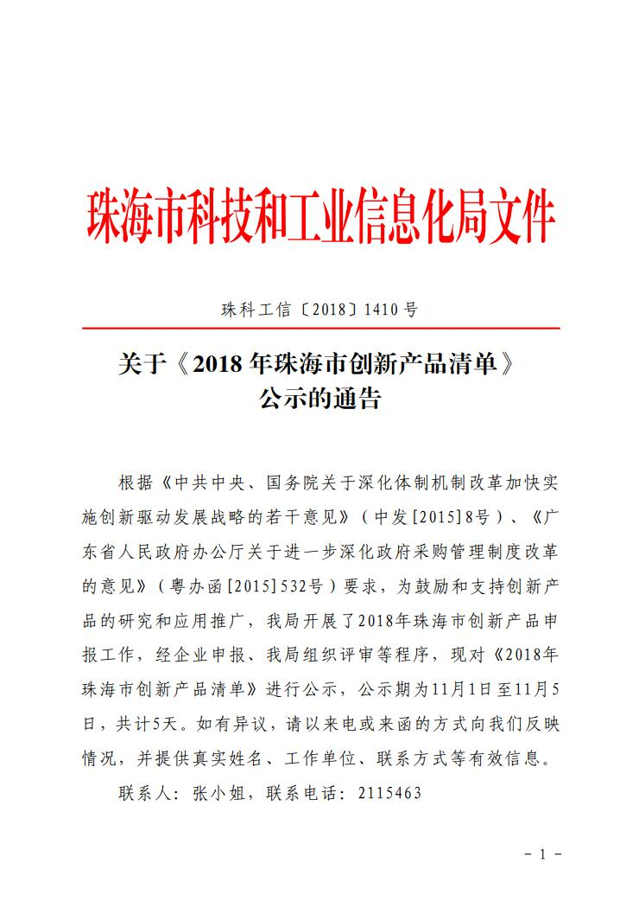
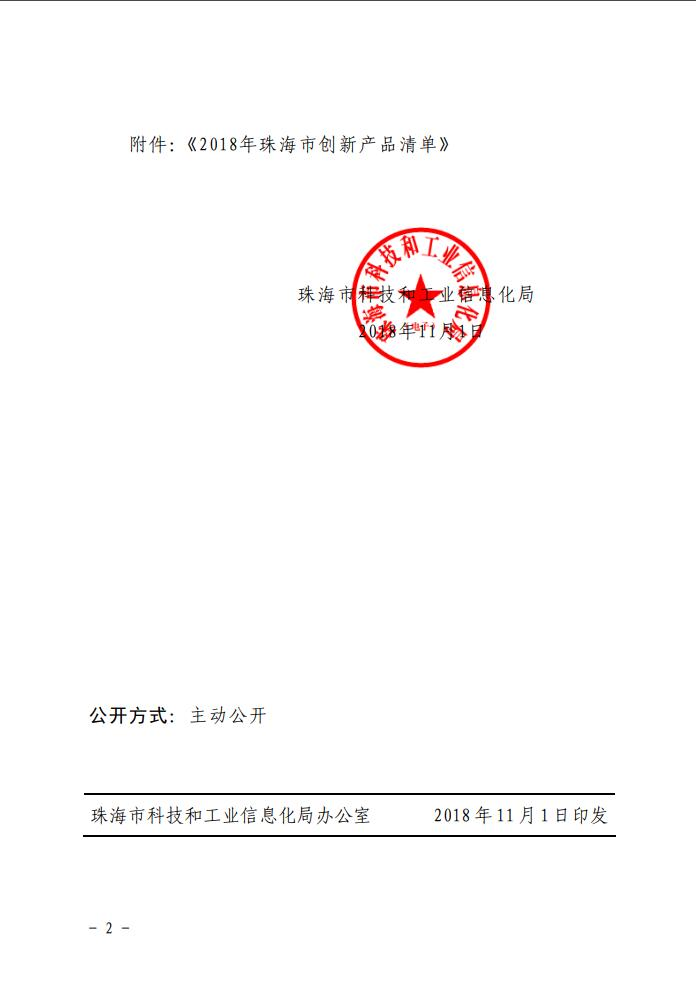

德百祺5项产品入选2018年度珠海市创新产品
发布日期：2018-11-01
德百祺5项产品“高灵敏度 TIS 定位终端及系统（ZJ210、ZJ220、ZJ300、ZJ700、IV100）”成功入选2018年度珠海市创新产品。
查看全文
根据《中共中央、国务院关于深化体制机制改革加快实施创新驱动发展战略的若干意见》（中发[2015]8号）、《广东省人民政府办公厅关于进一步深化政府采购管理制度改革的意见》（粤办函[2015]532号）要求，为鼓励和支持创新产品的研究和应用推广，珠海市科技和工业信息化局开展了2018年珠海市创新产品申报工作，经企业申报、市局组织评审等程序，现德百祺5项产品“高灵敏度 TIS 定位终端及系统（ZJ210、ZJ220、ZJ300、ZJ700、IV100）”成功入选2018年度珠海市创新产品。

